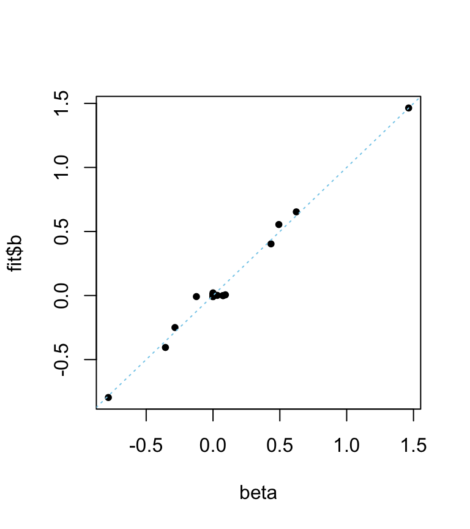
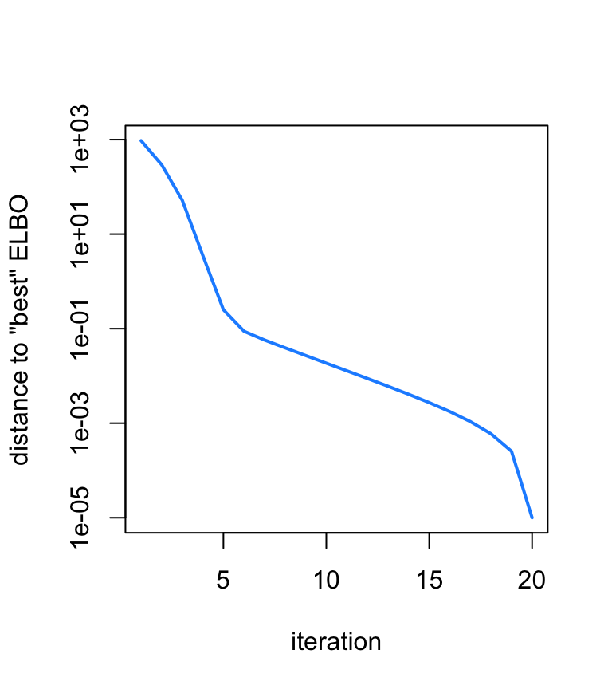

Last updated: 2020-02-20
Checks: 7 0
Knit directory: mr-ash/analysis/
This reproducible R Markdown analysis was created with workflowr (version 1.6.0). The Checks tab describes the reproducibility checks that were applied when the results were created. The Past versions tab lists the development history.
Great! Since the R Markdown file has been committed to the Git repository, you know the exact version of the code that produced these results.
Great job! The global environment was empty. Objects defined in the global environment can affect the analysis in your R Markdown file in unknown ways. For reproduciblity it’s best to always run the code in an empty environment.
The command set.seed(1) was run prior to running the code in the R Markdown file. Setting a seed ensures that any results that rely on randomness, e.g. subsampling or permutations, are reproducible.
Great job! Recording the operating system, R version, and package versions is critical for reproducibility.
Nice! There were no cached chunks for this analysis, so you can be confident that you successfully produced the results during this run.
Great job! Using relative paths to the files within your workflowr project makes it easier to run your code on other machines.
Great! You are using Git for version control. Tracking code development and connecting the code version to the results is critical for reproducibility. The version displayed above was the version of the Git repository at the time these results were generated.
Note that you need to be careful to ensure that all relevant files for the analysis have been committed to Git prior to generating the results (you can use wflow_publish or wflow_git_commit). workflowr only checks the R Markdown file, but you know if there are other scripts or data files that it depends on. Below is the status of the Git repository when the results were generated:
Unstaged changes:
Modified: analysis/em_vs_mixsqp.Rmd
Note that any generated files, e.g. HTML, png, CSS, etc., are not included in this status report because it is ok for generated content to have uncommitted changes.
These are the previous versions of the R Markdown and HTML files. If you’ve configured a remote Git repository (see ?wflow_git_remote), click on the hyperlinks in the table below to view them.
| File | Version | Author | Date | Message |
|---|---|---|---|---|
| Rmd | a255a44 | Peter Carbonetto | 2020-02-20 | wflow_publish(“mr_ash_demo.Rmd”) |
| html | 582e465 | Peter Carbonetto | 2020-02-20 | Created first draft of mr_ash_demo workflowr page. |
| Rmd | 12ad071 | Peter Carbonetto | 2020-02-20 | wflow_publish(“mr_ash_demo.Rmd”) |
An illustration of the “mr-ash” co-ordinate ascent algorithm applied to a small, simulated data set.
These are the data simulation settings.
n <- 500
p <- 1000
sd <- c(0, 1, 2)
w <- c(0.98, 0.01, 0.01)This specifies the variances for the mixture-of-normals prior on the regression coefficients.
s0 <- c(0.01,0.5,1)^2This R code provides a very simple implementation of the mr-ash algorithm.
source("../code/misc.R")
source("../code/mr_ash.R")set.seed(1)
X <- matrix(rnorm(n*p),n,p)
k <- sample(length(w),p,replace = TRUE,prob = w)
beta <- sd[k] * rnorm(p)
y <- drop(X %*% beta + rnorm(n))These are the initial estimates of residual variance (s), mixture weights (w0) and posterior mean estimates of the regression coefficients (b).
b <- rep(0,p)
s <- 1
w0 <- c(0.5,0.25,0.25)Fit the model by running 20 EM updates.
fit <- mr_ash(X,y,s,s0,w0,b,20)
# iter elbo max|b-b'|
# 1 -1.756557184890e+03 6.927e-01
# 2 -1.099123931192e+03 4.780e-01
# 3 -8.578720448759e+02 2.738e-01
# 4 -8.091518626699e+02 5.838e-02
# 5 -8.058755580814e+02 9.888e-03
# 6 -8.057118084929e+02 3.166e-03
# 7 -8.056811273699e+02 8.567e-04
# 8 -8.056629085272e+02 3.231e-04
# 9 -8.056505966230e+02 1.970e-04
# 10 -8.056421813525e+02 1.526e-04
# 11 -8.056363928186e+02 1.260e-04
# 12 -8.056323873106e+02 1.056e-04
# 13 -8.056296004148e+02 8.869e-05
# 14 -8.056276519072e+02 7.458e-05
# 15 -8.056262837295e+02 6.277e-05
# 16 -8.056253194612e+02 5.288e-05
# 17 -8.056246376769e+02 4.458e-05
# 18 -8.056241542917e+02 3.761e-05
# 19 -8.056238107616e+02 3.176e-05
# 20 -8.056235661300e+02 2.684e-05Compare the mr-ash estimates against the values used to simulate the data.
plot(beta,fit$b,pch = 20,col = "black")
abline(a = 0,b = 1,col = "skyblue",lty = "dotted",xlab = "true",
ylab = "estimated")
| Version | Author | Date |
|---|---|---|
| 582e465 | Peter Carbonetto | 2020-02-20 |
Plot the improvement in the model fit over time, as measured by the ELBO.
plot(max(fit$elbo) - fit$elbo + 1e-5,type = "l",col = "dodgerblue",
lwd = 2,log = "y",xlab = "iteration",ylab = "distance to \"best\" ELBO")
| Version | Author | Date |
|---|---|---|
| 582e465 | Peter Carbonetto | 2020-02-20 |
sessionInfo()
# R version 3.6.2 (2019-12-12)
# Platform: x86_64-apple-darwin15.6.0 (64-bit)
# Running under: macOS Catalina 10.15.3
#
# Matrix products: default
# BLAS: /Library/Frameworks/R.framework/Versions/3.6/Resources/lib/libRblas.0.dylib
# LAPACK: /Library/Frameworks/R.framework/Versions/3.6/Resources/lib/libRlapack.dylib
#
# locale:
# [1] en_US.UTF-8/en_US.UTF-8/en_US.UTF-8/C/en_US.UTF-8/en_US.UTF-8
#
# attached base packages:
# [1] stats graphics grDevices utils datasets methods base
#
# loaded via a namespace (and not attached):
# [1] workflowr_1.6.0 Rcpp_1.0.3 rprojroot_1.3-2 digest_0.6.23
# [5] later_1.0.0 R6_2.4.1 backports_1.1.5 git2r_0.26.1
# [9] magrittr_1.5 evaluate_0.14 stringi_1.4.3 rlang_0.4.2
# [13] fs_1.3.1 promises_1.1.0 whisker_0.4 rmarkdown_2.0
# [17] tools_3.6.2 stringr_1.4.0 glue_1.3.1 httpuv_1.5.2
# [21] xfun_0.11 yaml_2.2.0 compiler_3.6.2 htmltools_0.4.0
# [25] knitr_1.26